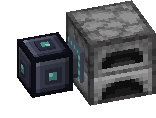
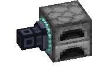
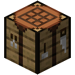
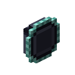

Access Port


The Access Port is how your network talks to other machines. Put one next to a furnace, a modded machine or a multiblock, then pick which processing recipes it makes there.
Setting it up
- Join the port to your network with a Data Cable.
- Write a processing recipe at a Network Encoder: what goes in, and up to three things that come back. Keep the card in a Recipe Rack.
- Right-click the port and pick the recipe in its screen.
- Make the machine give its results back into the port, or use a hopper or a pipe. A JASM machine with an Input / Output key works with the port only through the side facing it: Input takes the ingredients, Output sends the results back into the port.
Fluids work too. Several ports with the same recipe share the work.
The port screen
- Recipe list on the left: every processing recipe in the Recipe Racks of your network. Search it by name, hover a recipe for its details, and fold the list away with the key on its left edge.
- Active recipes on the main panel: the ones this port makes, up to 16. Click a recipe in the list to add it, click it in the active bar to remove it. A tick in the list marks recipes the port already serves.
- Machine row: the machine the port works with, and what it is doing. Hover its icon for the name.
- A recipe whose card has left every rack is dimmed and marked as missing. It comes back when the card is in a rack again.
- The pencil key opens a small window to rename the port. Press Rename to set the name.
- Copy and Paste keys on the Active recipes row remember a port's name and recipes until the game closes. Click Paste to replace this port's name and recipes, or Shift+click to add its recipes (up to 16).
Editing a card makes a new recipe: pick the new one again.
Machine types
A full block port works with the kinds of machine picked in its Machine row, even if others touch it. The first one it finds is picked. When more kinds are touching, click their icons to pick or unpick them; one always stays picked. If the machine is swapped for another kind, the port follows once the old kind is gone.
With several machines picked, even of different kinds, a job splits its sets evenly between all of them. Make sure each one can run the recipe: a job waits for a machine that won't take its share.
A thin port has one machine, the one it faces.
Only one port works with a machine. A second port facing a machine another port already uses does nothing with it, and its screen says "Machine in use by another port". It takes the machine over when the first port is broken or turned away.
Active and Passive
- The key at the start of the Machine row switches a full block port between Active and Passive. It can't be switched while a job is using the port.
- Active sends each set of ingredients straight into the picked machines.
- Passive has no machines. Each set waits hidden inside the port, and pipes or hoppers pull it out from any face. They can take only those ingredients, never the incoming items or the network's storage. Push the results back into the port to finish the set.
- A Passive port holds up to nine stacks of items, plus the fluids of its sets, and works on one recipe at a time. With Blocking Mode on, the next set waits until the last one's results are back. Recipes with other mods' materials don't run through it.
- Cancelling a job takes back what is still waiting in the port; what the pipes already took is yours. Breaking the port sends what it holds to the network, or drops the items when it has none.
Two shapes
- Full block: also takes items from any face, even without a crafting job. It has an eight-slot buffer. Ordinary items go to the owner's paired Deck, or to another paired Deck you pick in the port. Items wait if the Deck is full.
- Thin: a cable attachment, up to six on one cable, one per face. It can also sit straight on a machine with no cable. It stays off the network until you place a cable into its space, and it stays in place if the cable is broken.
Convert one into the other in a crafting grid. Both recipes are below.
Good to know
- Machines and pipes can push items and fluids into it, and they go into the network's storage when there's room.
- A thin port serves and accepts items only through its outward face, including from pipes and hoppers while idle.
- Blocking mode waits to send new ingredients while the machine still holds some for this recipe.
- Mined or picked up with a Wrench, the port keeps its name, machine types, recipes, Active or Passive, Blocking Mode and redstone mode, and has them again when placed.
- A job whose recipe no port serves waits and says so, and carries on once a port serves it again. Ingredients already sent to a port that is then mined are no longer waited on.
Upgrades and power
- Add a Power Upgrade to supply FE to the machines of the chosen type, or the machine a thin port faces.
- Five upgrade slots take up to four Speed Upgrades and one Redstone Upgrade. A paused port moves nothing and shows Paused, and crafting jobs wait for it.
- It uses no power itself, but the paired Deck pays 1 FE for each item it moves. It counts toward the machine limit.
Recipes

Crafting


